01-Tomcat
1.tomcat是什么
Tomcat服务器是一个开源的轻量级Web应用服务器，在中小型系统和并发量小的场合下被普遍使用，是开发和调试Servlet、JSP 程序的首选。
除此之外，Apache Tomcat还可以很容易与Apache Http Server.Nginx等知名的Web服务器集成，以实现负载均衡和集群化部署。现在已经被广泛用于开发、测试环境，甚至大规模、高并发的互联网产品部署。
Tomcat是Apache软件基金会（Apache Software Foundation）项目中的一个核心项目，由Apache、Sun和其他一些公司及个人共同开发而成。
Tomcat服务器是一个免费的开放源代码的Web应用服务器，属于轻量级应用服务器，在中小型系统和并发访问用户不是很多的场合下被普遍使用，是开发和调试JSP程序的首选。
Tomcat和Nginx、Apache(httpd)、lighttpd等Web服务器一样，具有处理HTML页面的功能，另外它还是一个Servlet和JSP容器，独立的Servlet容器是Tomcat的默认模式。
Tomcat处理静态HTML的能力不如Nginx/Apache服务器。
Java容器还有resin、weblogic等。
1.1 tomcat问答
a.什么是Tomcat
Tomcat和我们此前学习的 Nginx 类似，也是一个Web服务器。
b.Tomcat与Nginx有什么区别？
tomcat是一个java版的web服务器
Nginx仅支持静态资源，而Tomcat则支持Java开发的 jsp 动态资源和静态资源。
Nginx适合做前端负载均衡，而Tomcat适合做后端应用服务处理。
通常情况下，企业会使用 Nginx+tomcat 结合使用，由Nginx处理静态资源，Tomcat处理动态资源。
1.2 什么是JVM
JVM是Java Virtual Machine（Java虚拟机）的缩写
Java虚拟机本质是就是一个程序，当它在命令行上启动的时候，就开始执行保存在某字节码文件中的指令。
Java语言的可移植性正是建立在Java虚拟机的基础上。
任何平台只要装有针对于该平台的Java虚拟机，字节码文件（.class）就可以在该平台上运行。
这就是“一次编译，多次运行”。
2.回忆网站运行原理
2.1Web运行原理
学了LNMP之后，对于Web网站的解析过程，想必各位已经有所了解，当超哥在浏览器中输入一个URL之后，经过DNS解析之后对应的服务器就会吧该URL对应的网页，通过远程Web服务器发送到客户端，且由客户端的浏览器将其展示出来。
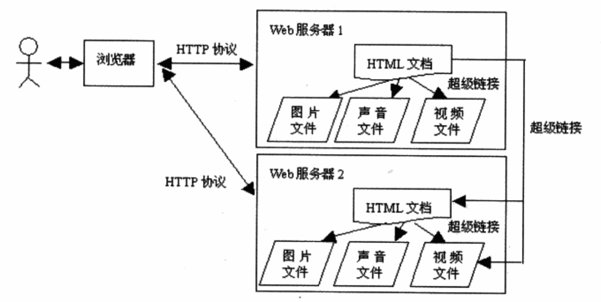
Web服务器上存放了各种静态文件，如HTML，图片，音视频等，这些信息通过超文本技术相互连接，也就是HTML文件，且采用HTTP协议和Web服务器通信，这样就能拿到Web服务器上的各种资料。
2.2 tomcat后端架构
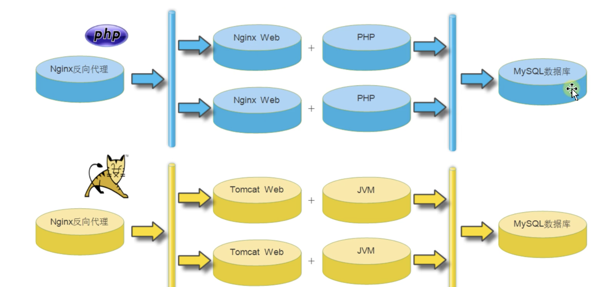
Tomcat本身完全用Java语言开发，Tomcat目前可以和大部分Web服务器（IIS，Apache，Nginx）一起工作，且Tomcat是运行Java代码等容器。
常见用法是，nginx+tomcat，实现动静态请求分离。
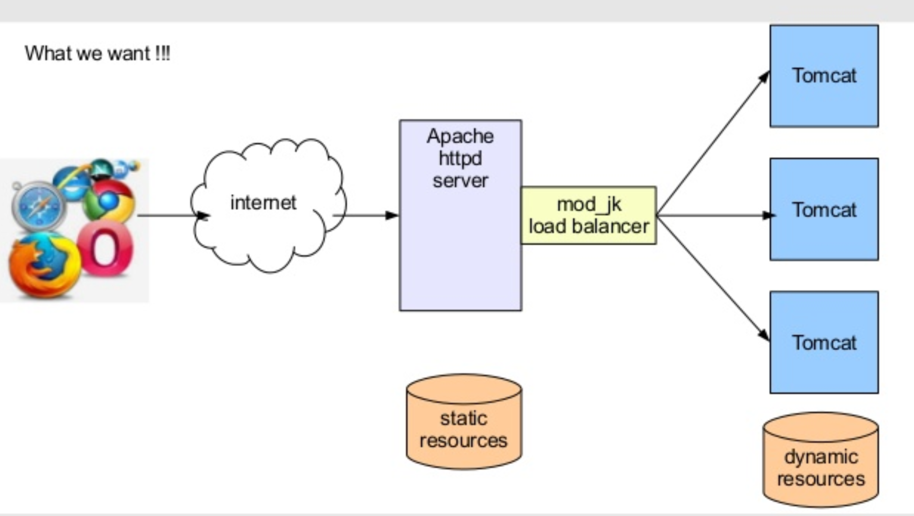
Tomcat本身由一系列可配置等组件构成，核心组件是Servlet容器组件，Servlet就是一个用java语言开发，运行在服务器上的插件，用于解析动态的用户请求。
在使用java开发的公司，进行代码部署，常见做法是：
- 将Tomcat作为独立的Web服务器单独运行，Tomcat的运行必须依赖于Java虚拟机进程（Java Virtual Machine，JNM）进程。
- JVM虚拟机解决了JAVA程序，可以运行在任何平台上，解决了可移植性。
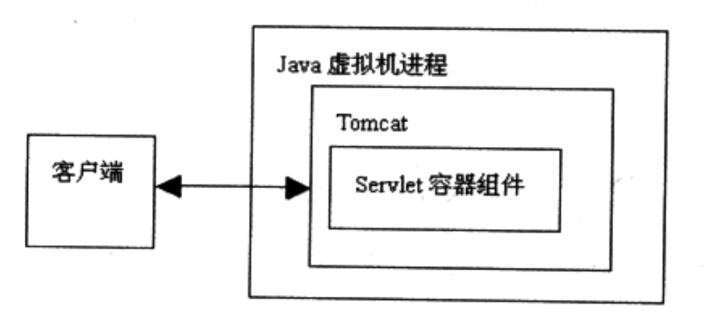
2.3 JDK是什么
Tomcat运行必须得有java环境，这个JDK是：
Java Development Kit（JDK）sun公司对Java开发人员发布的免费软件开发工具包（SDK，Software development kit）
JDK是 Java 语言的软件开发工具包，主要用于移动设备、嵌入式设备上的java应用程序。
JDK是整个java开发的核心，它包含了JAVA的运行环境（JVM+Java系统类库）和JAVA工具。
JDK包含了一批用于Java开发的组件，其中包括：
javac：编译器，将后缀名为.java的源代码编译成后缀名为“.class”的字节码
java：运行工具，运行.class的字节码
jar：打包工具，将相关的类文件打包成一个文件
javadoc：文档生成器，从源码注释中提取文档，注释需匹配规范
jdb debugger：调试工具
jps：显示当前java程序运行的进程状态
javap：反编译程序
appletviewer：运行和调试applet程序的工具，不需要使用浏览器
javah：从Java类生成C头文件和C源文件。这些文件提供了连接胶合，使Java和C代码可进行交互。
javaws：运行JNLP程序
extcheck：一个检测jar包冲突的工具
apt：注释处理工具
jhat：java堆分析工具
jstack：栈跟踪程序
jstat：JVM检测统计工具
jstatd：jstat守护进程
jinfo：获取正在运行或崩溃的java程序配置信息
jmap：获取java进程内存映射信息
idlj：IDL-to-Java编译器。将IDL语言转化为java文件
policytool：一个GUI的策略文件创建和管理工具
jrunscript：命令行脚本运行
JDK下载页面
http://www.oracle.com/technetwork/java/javase/downloads/index.html
3.安装Tomcat和JDK
安装时候选择tomcat软件版本要与程序开发使用的版本一致。jdk版本要进行与tomcat保持一致。
| 机器名 | ip地址 | 软件包 |
|---|---|---|
| tomcat01 | 10.0.0.11 | tomcat+nfs |
| tomcat02 | 10.0.0.12 | tomcat+nfs |
| lb01 | 10.0.0.5 | nginx+mariadb+redis+nfs |
3.1 安装jdk
1.安装jdk、tomcat即可，没有软件包可以从于超老师要
[root@tomcat-10 ~/tomcat-all]#ls
apache-tomcat-8.0.27.tar.gz jdk-8u221-linux-x64.tar.gz
2.安装jdk
[root@tomcat-10 ~/tomcat-all]#
[root@tomcat-10 ~/tomcat-all]#tar -xf jdk-8u221-linux-x64.tar.gz -C /opt
[root@tomcat-10 ~/tomcat-all]#ls /opt
jdk1.8.0_221
配置软连接，修改PATH
[root@tomcat-10 ~/tomcat-all]#ln -s /opt/jdk1.8.0_221/ /opt/jdk8
sed -i.ori '$a export JAVA_HOME=/opt/jdk8\nexport PATH=$JAVA_HOME/bin:$JAVA_HOME/jre/bin:$PATH\nexport CLASSPATH=.$CLASSPATH:$JAVA_HOME/lib:$JAVA_HOME/jre/lib:$JAVA_HOME/lib/tools.jar' /etc/profile
检查PATH
[root@tomcat-10 ~/tomcat-all]#tail -5 /etc/profile
export PS1="[\[\e[34;1m\]\u@\[\e[0m\]\[\e[32;1m\]\H\[\e[0m\] \[\e[31;1m\]\w\[\e[0m\]]\\$"
unset mailcheck
export JAVA_HOME=/opt/jdk8
export PATH=$JAVA_HOME/bin:$JAVA_HOME/jre/bin:$PATH
export CLASSPATH=.$CLASSPATH:$JAVA_HOME/lib:$JAVA_HOME/jre/lib:$JAVA_HOME/lib/tools.jar
生效
[root@tomcat-10 ~/tomcat-all]#source /etc/profile
[root@tomcat-10 ~/tomcat-all]#java -version
java version "1.8.0_221"
Java(TM) SE Runtime Environment (build 1.8.0_221-b11)
Java HotSpot(TM) 64-Bit Server VM (build 25.221-b11, mixed mode)
3.2 安装tomcat
[root@tomcat-10 ~/tomcat-all]#ls
apache-tomcat-8.0.27.tar.gz jdk-8u221-linux-x64.tar.gz
[root@tomcat-10 ~/tomcat-all]#tar -xf apache-tomcat-8.0.27.tar.gz -C /opt/
[root@tomcat-10 ~/tomcat-all]#ls /opt/
apache-tomcat-8.0.27 jdk1.8.0_221 jdk8
[root@tomcat-10 ~/tomcat-all]#ln -s /opt/apache-tomcat-8.0.27/ /opt/tomcat8
[root@tomcat-10 ~/tomcat-all]#
检查tomcat，是否识别了jdk
[root@tomcat-10 ~]#/opt/tomcat8/bin/version.sh
Using CATALINA_BASE: /opt/tomcat8
Using CATALINA_HOME: /opt/tomcat8
Using CATALINA_TMPDIR: /opt/tomcat8/temp
Using JRE_HOME: /opt/jdk8
Using CLASSPATH: /opt/tomcat8/bin/bootstrap.jar:/opt/tomcat8/bin/tomcat-juli.jar
Server version: Apache Tomcat/8.0.27
Server built: Sep 28 2015 08:17:25 UTC
Server number: 8.0.27.0
OS Name: Linux
OS Version: 3.10.0-862.el7.x86_64
Architecture: amd64
JVM Version: 1.8.0_221-b11
JVM Vendor: Oracle Corporation
[root@tomcat-10 ~]#
3.3 tomcat目录介绍
程序根目录
[root@tomcat-10 ~]#ls /opt/tomcat8/
bin conf lib LICENSE logs NOTICE RELEASE-NOTES RUNNING.txt temp webapps work
drwxr-xr-x 2 root root 4096 Aug 3 03:05 bin #主要包含启动、关闭tomcat脚本和脚本依赖文件 非常重要
drwxr-xr-x 3 root root 198 Aug 3 03:05 conf #tomcat配置文件目录 非常重要
drwxr-xr-x 2 root root 4096 Aug 3 03:05 lib #tomcat运行需要加载的jar包 非常重要
-rw-r--r-- 1 root root 57011 Sep 28 2015 LICENSE #license文件，不重要
drwxr-xr-x 2 root root 197 Aug 3 03:15 logs #在运行过程中产生的日志文件 非常重要
-rw-r--r-- 1 root root 1444 Sep 28 2015 NOTICE #不重要
-rw-r--r-- 1 root root 6741 Sep 28 2015 RELEASE-NOTES #版本特性，不重要
-rw-r--r-- 1 root root 16204 Sep 28 2015 RUNNING.txt #帮助文件，不重要
drwxr-xr-x 2 root root 30 Aug 3 03:05 temp #存放临时文件
drwxr-xr-x 7 root root 81 Sep 28 2015 webapps #站点目录 非常重要
drwxr-xr-x 3 root root 22 Aug 3 03:05 work #tomcat运行时产生的缓存文件
站点目录
[root@tomcat-10 ~]#ls /opt/tomcat8/webapps/
docs examples host-manager manager ROOT
├── docs # tomcat 帮助文档
├── examples # web应用实例
├── host-manager # 主机管理
├── manager # 管理
└── ROOT # 默认站点根目录
配置文件
[root@tomcat-10 ~]#ls /opt/tomcat8/conf/
catalina.policy catalina.properties context.xml logging.properties server.xml tomcat-users.xml tomcat-users.xsd web.xml
├── catalina.policy
├── catalina.properties
├── context.xml
├── logging.properties
├── server.xml # tomcat主配置，例如更改端口等
├── tomcat-users.xml # tomcat管理用户配置
├── tomcat-users.xsd
└── web.xml
管理脚本
[root@tomcat-10 ~]#ls /opt/tomcat8/bin/*.sh -l
-rwxr-xr-x 1 root root 21389 Sep 28 2015 /opt/tomcat8/bin/catalina.sh
-rwxr-xr-x 1 root root 1922 Sep 28 2015 /opt/tomcat8/bin/configtest.sh
-rwxr-xr-x 1 root root 7888 Sep 28 2015 /opt/tomcat8/bin/daemon.sh
-rwxr-xr-x 1 root root 1965 Sep 28 2015 /opt/tomcat8/bin/digest.sh
-rwxr-xr-x 1 root root 3547 Sep 28 2015 /opt/tomcat8/bin/setclasspath.sh
-rwxr-xr-x 1 root root 1902 Sep 28 2015 /opt/tomcat8/bin/shutdown.sh
-rwxr-xr-x 1 root root 1904 Sep 28 2015 /opt/tomcat8/bin/startup.sh
-rwxr-xr-x 1 root root 5061 Sep 28 2015 /opt/tomcat8/bin/tool-wrapper.sh
-rwxr-xr-x 1 root root 1908 Sep 28 2015 /opt/tomcat8/bin/version.sh
3.4 启动tomcat
优化jdk设置，加速tomcat启动
[root@tomcat-10 ~]#grep '^secure' /opt/jdk8/jre/lib/security/java.security
securerandom.source=file:/dev/urandom
securerandom.strongAlgorithms=NativePRNGBlocking:SUN
[root@tomcat-10 ~]#/opt/tomcat8/bin/startup.sh
Using CATALINA_BASE: /opt/tomcat8
Using CATALINA_HOME: /opt/tomcat8
Using CATALINA_TMPDIR: /opt/tomcat8/temp
Using JRE_HOME: /opt/jdk8
Using CLASSPATH: /opt/tomcat8/bin/bootstrap.jar:/opt/tomcat8/bin/tomcat-juli.jar
Tomcat started.
tomcat启动日志
[root@tomcat-10 ~]#tail -f /opt/tomcat8/logs/catalina.out
....
17-Jul-2022 00:51:55.768 INFO [localhost-startStop-1] org.apache.catalina.startup.HostConfig.deployDirectory Deployment of web application directory /opt/apache-tomcat-8.0.27/webapps/manager has finished in 9 ms
17-Jul-2022 00:51:55.770 INFO [main] org.apache.coyote.AbstractProtocol.start Starting ProtocolHandler ["http-nio-8080"]
17-Jul-2022 00:51:55.774 INFO [main] org.apache.coyote.AbstractProtocol.start Starting ProtocolHandler ["ajp-nio-8009"]
17-Jul-2022 00:51:55.775 INFO [main] org.apache.catalina.startup.Catalina.start Server startup in 376 ms
检查端口
[root@tomcat-10 ~]#netstat -tunlp|grep java
tcp6 0 0 127.0.0.1:8005 :::* LISTEN 2042/java
tcp6 0 0 :::8009 :::* LISTEN 2042/java
tcp6 0 0 :::8080 :::* LISTEN 2042/java
3.4.1 访问tomcat
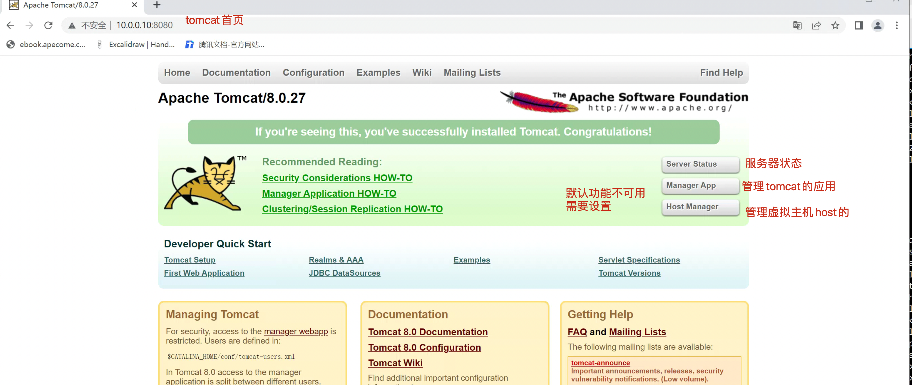
3.4.2 tomcat认证账密
tomcat默认提供的功能都需要设置账密认证，否则无法访问，默认没有账密。
如果需要开启这个功能，就需要配置管理用户，即配置tomcat-users.xml 文件。
[root@tomcat-10 /opt/tomcat8]#tail -5 conf/tomcat-users.xml
<role rolename="manager-gui"/>
<role rolename="admin-gui"/>
<user username="tomcat" password="www.yuchaoit.cn" roles="manager-gui,admin-gui"/>
</tomcat-users>
重启
[root@tomcat-10 /opt/tomcat8]#/opt/tomcat8/bin/shutdown.sh
Using CATALINA_BASE: /opt/tomcat8
Using CATALINA_HOME: /opt/tomcat8
Using CATALINA_TMPDIR: /opt/tomcat8/temp
Using JRE_HOME: /opt/jdk8
Using CLASSPATH: /opt/tomcat8/bin/bootstrap.jar:/opt/tomcat8/bin/tomcat-juli.jar
[root@tomcat-10 /opt/tomcat8]#
[root@tomcat-10 /opt/tomcat8]#/opt/tomcat8/bin/startup.sh
Using CATALINA_BASE: /opt/tomcat8
Using CATALINA_HOME: /opt/tomcat8
Using CATALINA_TMPDIR: /opt/tomcat8/temp
Using JRE_HOME: /opt/jdk8
Using CLASSPATH: /opt/tomcat8/bin/bootstrap.jar:/opt/tomcat8/bin/tomcat-juli.jar
Tomcat started.
这回上述3个功能都可以输入账密访问了。
3.5 图解tomcat配置文件
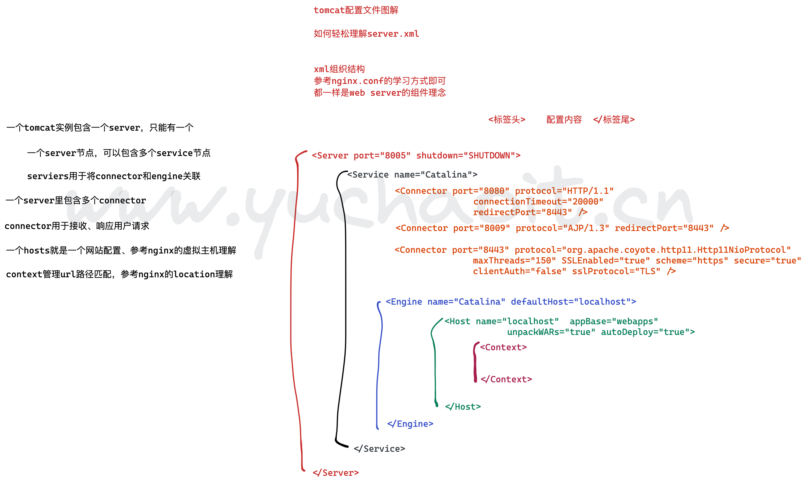
一个Service可以包含多个Connector，但是只能包含一个Engine；
其中Connector的作用是从客户端接收请求
Engine的作用是处理接收进来的请求。
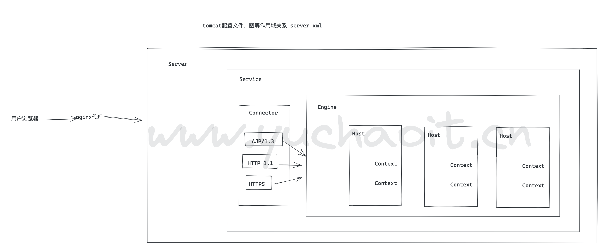
3.6 更多tomcat配置详解
官网文档资料
https://tomcat.apache.org/tomcat-8.0-doc/config/index.html
参考博客
https://www.cnblogs.com/kismetv/p/7228274.html#title6
4.tomcat部署java网站
4.1 war包部署
tomcat部署代码的方式有两种：
- 开发打包好的代码，直接放在webapps目录下
- 使用开发工具将程序打包成war包，再传到webapps目录下
jpress官网：http://jpress.io
下载地址：https://github.com/JpressProjects/jpress
1.安装数据库
yum install mariadb-server mariadb -y
systemctl start mariadb.service
2.配置数据库信息，创建库，存储数据
mysqladmin password www.yuchaoit.cn
mysql -uroot -pwww.yuchaoit.cn -e "create database jpress DEFAULT CHARACTER SET utf8;"
mysql -uroot -pwww.yuchaoit.cn -e "grant all on jpress.* to jpress@'localhost' identified by 'www.yuchaoit.cn';"
mysql -uroot -pwww.yuchaoit.cn -e "flush privileges;"
3.上传代码到tomcat的webappes目录，tomcat自动解压缩war包
还有一种部署方式就是，maven编译，基于jar包去运行。
[root@tomcat-10 /opt/tomcat8]#cd /opt/
[root@tomcat-10 /opt]#ls
apache-tomcat-8.0.27 jdk1.8.0_221 jdk8 jpress.war tomcat8
[root@tomcat-10 /opt]#
[root@tomcat-10 /opt]#
[root@tomcat-10 /opt]#ls /opt/tomcat8/webapps/
docs examples host-manager manager ROOT
[root@tomcat-10 /opt]#cp /opt/jpress.war /opt/tomcat8/webapps/
[root@tomcat-10 /opt]#
[root@tomcat-10 /opt]#ls /opt/tomcat8/webapps/
docs examples host-manager jpress jpress.war manager ROOT
[root@tomcat-10 /opt]#ls /opt/tomcat8/webapps/jpress
META-INF robots.txt static templates WEB-INF
发现已经解压缩出了jpress目录
4.访问即可
http://10.0.0.10:8080/jpress/install
就和安装wordpress一个玩法，输入数据库信息，设置管理员账密
admin
www.yuchaoit.cn
访问规则
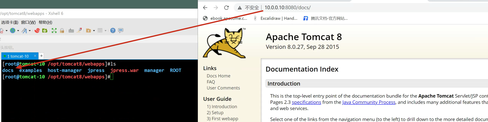
部署规则
server.xml中
<Host name="localhost" appBase="webapps"
unpackWARs="true" autoDeploy="true">
自动解压缩，自动部署了
4.2 maven部署
1. 安装java、maven编译环境
[root@tomcat-10 ~]#java -version
java version "1.8.0_221"
Java(TM) SE Runtime Environment (build 1.8.0_221-b11)
Java HotSpot(TM) 64-Bit Server VM (build 25.221-b11, mixed mode)
wget https://mirrors.tuna.tsinghua.edu.cn/apache/maven/maven-3/3.3.9/binaries/apache-maven-3.3.9-bin.tar.gz --no-check-certificate
[root@tomcat-10 /opt]#tar -xf apache-maven-3.3.9-bin.tar.gz
[root@tomcat-10 /opt]#echo 'export PATH=$PATH:/opt/apache-maven-3.3.9/bin' >> /etc/profile
[root@tomcat-10 /opt]#
[root@tomcat-10 /opt]#source /etc/profile
[root@tomcat-10 /opt]#mvn -v
Apache Maven 3.3.9 (bb52d8502b132ec0a5a3f4c09453c07478323dc5; 2015-11-11T00:41:47+08:00)
Maven home: /opt/apache-maven-3.3.9
Java version: 1.8.0_221, vendor: Oracle Corporation
Java home: /opt/jdk1.8.0_221/jre
Default locale: en_US, platform encoding: UTF-8
OS name: "linux", version: "3.10.0-862.el7.x86_64", arch: "amd64", family: "unix"
2.下载源码
git clone https://gitee.com/JPressProjects/jpress.git
3.编译
修改mvn的源为阿里源
[root@tomcat-10 /opt/apache-maven-3.3.9]#vim conf/settings.xml
159
160 <mirror>
161 <id>aliyunmaven</id>
162 <mirrorOf>*</mirrorOf>
163 <name>阿里云公共仓库</name>
164 <url>https://maven.aliyun.com/repository/public</url>
165 </mirror>
166
167 </mirrors>
cd jpress
mvn clean package
4.查看jar包
[root@tomcat-10 /opt/jpress/starter/target/starter-4.0]#ls
config jpress.bat jpress.sh jpress-start.bat jpress-stop.bat lib webapp
5.启动
修改启动地址为0.0.0.0
改为后台运行，日志写入nohup.log
别忘记把tomcat停了，因为目前通过java去启动，内置了tomcat
[root@tomcat-10 /opt/jpress/starter/target/starter-4.0]#/opt/tomcat8/bin/shutdown.sh
[root@tomcat-10 /opt/jpress/starter/target/starter-4.0]#./jpress.sh start
[root@tomcat-10 /opt/jpress/starter/target/starter-4.0]#nohup: redirecting stderr to stdout
[root@tomcat-10 /opt/jpress/starter/target/starter-4.0]#
[root@tomcat-10 /opt/jpress/starter/target/starter-4.0]#tail -f output.log
JbootApplication { name='jboot', mode='dev', version='3.15.3', proxy='cglib', listener='*', listenerPackage='*' }
JbootApplication ClassPath: /opt/jpress/starter/target/starter-4.0/config/
Starting JFinal 5.0.0 -> http://0.0.0.0:80
Info: jfinal-undertow 3.0, undertow 2.2.17.Final, jvm 1.8.0_221
Jboot LoggerFactory: org.apache.logging.slf4j.Log4jLoggerFactory
Starting Complete in 1.1 seconds. Welcome To The JFinal World (^_^)
JbootResourceLoader started, Watched resource path name : webapp
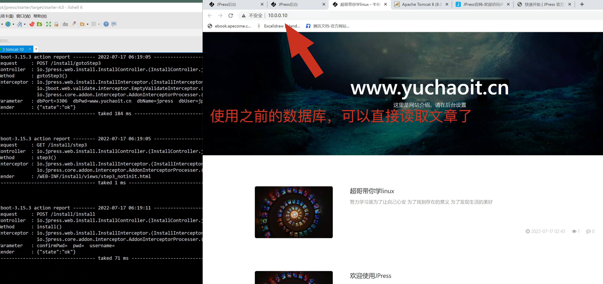
博客后台
http://10.0.0.10/admin
5.tomcat多实例
通常，我们在同一台服务器上对 Tomcat 部署需求可以分为以下几种：单实例单应用，单实例多应用，多实例单应用，多实例多应用。
实例的概念可以理解为上面说的一个 Tomcat 目录。
- 单实例单应用：比较常用的一种方式，只需要把你打好的 war 包丢在
webapps目录下，执行启动 Tomcat 的脚本就行了。 - 单实例多应用：有两个不同的 Web 项目 war 包，还是只需要丢在
webapps目录下，执行启动 Tomcat 的脚本，访问不同项目加上不同的虚拟目录。这种方式要慎用在生产环境，因为重启或挂掉 Tomcat 后会影响另外一个应用的访问。 - 多实例单应用：多个 Tomcat 部署同一个项目，端口号不同，可以利用 Nginx 这么做负载均衡，当然意义不大。
- 多实例多应用：多个 Tomcat 部署多个不同的项目。这种模式在服务器资源有限，或者对服务器要求并不是很高的情况下，可以实现多个不同项目部署在同一台服务器上的需求，来实现资源使用的最大化。-
这次其实要说的就是这种方式，但多个 Tomcat 就是简单的复制出一个新的 Tomcat 目录后改一下端口么？这样做也太 Low 了点吧？哈哈，其实并不是低端没技术含量的问题，当你同一台服务器部署了多个不同基于 Tomcat 的 Web 服务时，会迎来下面几个极其现实的问题。
- 当你需要对数十台 Tomcat 版本进行升级的时候，你需要怎么做？
- 当你需要针对每一个不同的 Web 服务分配不用的内存时，你需要怎么做？
- 当你需要启动多台服务器时，你需要怎么做？
当然，好像上面的都不是很重要，注意，划重点，多实例部署最大作用就是最大化利用服务器资源。
5.1 部署架构
多实例的部署方案有俩
1. 直接复制拷贝完全另一份tomcat完整的目录，/opt/tomcat1 /opt/tomcat2
这个方案比较简单，拷贝，修改配置文件，区分开多个实例进程即可。
2. tomcat官网推荐的另一个方案
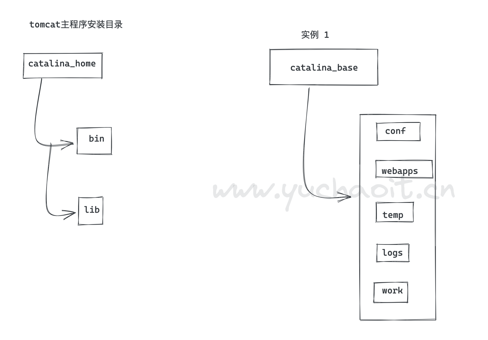
上图中的 CATALINA_HOME 指Tomcat安装路径，CATALINA_BASE 指实例所在位置。
CATALINA_HOME 路径下只需要包含 bin 和 lib 目录，而 CATALINA_BASE 只存放 conf、webapps、logs 等这些文件
这样部署的好处在于升级方便，配置及安装文件间互不影响，在不影响 Tomcat 实例的前提下，替换掉
CATALINA_HOME中的安装文件。
流程清楚了，接下来才是真正的撸起袖子加油干了。
5.2 部署流程
1.复制出两个 Tomcat 实例
在 Tomcat 主程序安装路径的同一级目录下，新建两个tomcat-1、tomcat-2文件夹
先把安装路径下的 conf、webapps、temp、logs、work 这五个文件移动到tomcat-1实例中：
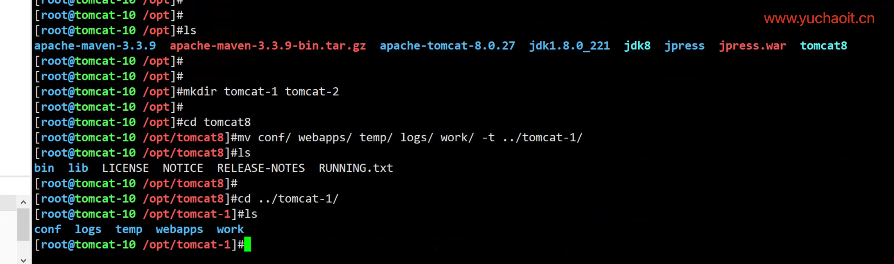
至此就构造出了catalina_base实例1的数据目录，然后复制给tomcat-2即可生成2个实例。
[root@tomcat-10 /opt]#cp -a tomcat-1/* tomcat-2/
[root@tomcat-10 /opt]#
2. 创建2个实例的管理脚本
依然是在 Tomcat 安装路径的同一级目录下，新建两个tomcat-shell文件夹，用于存放启动和停止脚本，同时赋予文件全部权限。
创建脚本
[root@tomcat-10 /opt]#mkdir tomcat-shell && cd tomcat-shell
[root@tomcat-10 /opt/tomcat-shell]#touch start_tomcat.sh stop_tomcat.sh
[root@tomcat-10 /opt/tomcat-shell]#chmod 777 *.sh
[root@tomcat-10 /opt/tomcat-shell]#ll
total 0
-rwxrwxrwx 1 root root 0 Jul 17 11:10 start_tomcat.sh
-rwxrwxrwx 1 root root 0 Jul 17 11:10 stop_tomcat.sh
启动脚本
涉及一个变量子串的语法
${变量%word} 从变量结尾删除最短的word
代码
#!/bin/bash
# author: www.yuchaoit.cn
export CATALINA_HOME=/opt/tomcat8
# 删除参数结尾的斜线
export CATALINA_BASE=${1%/}
TOMCAT_ID=`ps aux |grep "java"|grep "Dcatalina.base=$CATALINA_BASE "|grep -v "grep"|awk '{ print $2}'`
if [ -n "$TOMCAT_ID" ] ; then
echo "tomcat(${TOMCAT_ID}) still running now , please shutdown it firest";
exit 2;
fi
TOMCAT_START_LOG=`$CATALINA_HOME/bin/startup.sh`
if [ "$?" = "0" ]; then
echo "$0 $1 start succeed"
else
echo "$0 ${1%/} start failed"
echo $TOMCAT_START_LOG
fi
停止脚本
#!/bin/bash
# author: www.yuchaoit.cn
export CATALINA_HOME=/opt/tomcat8
export CATALINA_BASE=${1%/}
TOMCAT_ID=`ps aux |grep "java"|grep "[D]catalina.base=$CATALINA_BASE "|awk '{ print $2}'`
if [ -n "$TOMCAT_ID" ] ; then
TOMCAT_STOP_LOG=`$CATALINA_HOME/bin/shutdown.sh`
else
echo "Tomcat instance not found : ${1%/}"
exit
fi
if [ "$?" = "0" ]; then
echo "$0 ${1%/} stop succeed"
else
echo "$0 ${1%/} stop failed"
echo $TOMCAT_STOP_LOG
fi
解释
这两个就是简单的脚本，其中传入了要启动的 Tomcat 实例所在的路径
当然，你也可以写一个重启的脚本，其实就是先停止再启动，还可以加入不同的 JVM 参数配置等等操作。
到这里，其实全部基础工作已经做好了。接下来我们看一眼整个多实例的目录结构：
3.最终目录结构
[root@tomcat-10 /opt]#ls tomcat8 tomcat-1/ tomcat-2 tomcat-shell/
tomcat-1/:
conf logs temp webapps work
tomcat-2:
conf logs temp webapps work
tomcat8:
bin lib LICENSE NOTICE RELEASE-NOTES RUNNING.txt
tomcat-shell/:
1.sh start_tomcat.sh stop_tomcat.sh
4.配置多示例的配置文件
你知道的，同一个服务器部署不同 Tomcat 要设置不同的端口，不然会报端口冲突，所以我们只需要修改conf/server.xml中的其中前三个端口就行了。但它有四个分别是：
Server Port：该端口用于监听关闭tomcat的shutdown命令，默认为8005
Connector Port：该端口用于监听HTTP的请求，默认为8080
AJP Port：该端口用于监听AJP（ Apache JServ Protocol ）协议上的请求，通常用于整合Apache Server等其他HTTP服务器，默认为8009
Redirect Port：重定向端口，出现在Connector配置中，如果该Connector仅支持非SSL的普通http请求，那么该端口会把 https 的请求转发到这个Redirect Port指定的端口，默认为8443；
我这里把 tomcat-2 实例的 Connector Port 改为了 8081 ，并分别在 tomcat-1、tomcat-2 的 webapps/ROOT 目录下放入了一个页面文件，内容如下：
html
[root@tomcat-10 /opt]#cat tomcat-1/webapps/ROOT/hello.html
<html>
<title>Tomcat-1</title>
<body>
Hello man!
I am tomcat-1!
My website is www.yuchaoit.cn!
</body>
</html>
修改tomcat-1/conf/server.xml
[root@tomcat-10 /opt]#grep -E '8050|8051' /opt/tomcat-1/conf/server.xml
<Server port="8050" shutdown="SHUTDOWN">
<Connector port="8051" protocol="HTTP/1.1"
修改tomcat-2/conf/server.xml
[root@tomcat-10 /opt]#grep -E '8060|8061' /opt/tomcat-2/conf/server.xml
<Server port="8060" shutdown="SHUTDOWN">
<Connector port="8061" protocol="HTTP/1.1"
5.启动俩tomcat实例
[root@tomcat-10 /opt]#
[root@tomcat-10 /opt]#/opt/tomcat-shell/start_tomcat.sh /opt/tomcat-1/
/opt/tomcat-shell/start_tomcat.sh /opt/tomcat-1/ start succeed
[root@tomcat-10 /opt]#/opt/tomcat-shell/start_tomcat.sh /opt/tomcat-1/
tomcat(2865) still running now , please shutdown it firest
[root@tomcat-10 /opt]#
[root@tomcat-10 /opt]#
[root@tomcat-10 /opt]#
[root@tomcat-10 /opt]#/opt/tomcat-shell/start_tomcat.sh /opt/tomcat-2
/opt/tomcat-shell/start_tomcat.sh /opt/tomcat-2 start succeed
[root@tomcat-10 /opt]#/opt/tomcat-shell/start_tomcat.sh /opt/tomcat-2
tomcat(2916) still running now , please shutdown it firest
[root@tomcat-10 /opt]#
[root@tomcat-10 /opt]#netstat -tunlp|grep java
tcp6 0 0 127.0.0.1:8060 :::* LISTEN 2916/java
tcp6 0 0 :::8061 :::* LISTEN 2916/java
tcp6 0 0 :::8009 :::* LISTEN 2865/java
tcp6 0 0 127.0.0.1:8050 :::* LISTEN 2865/java
tcp6 0 0 :::8051 :::* LISTEN 2865/java
6.访问俩tomcat实例
注意，访问的是connector端口
http://10.0.0.10:8061/hello.html
http://10.0.0.10:8051/hello.html
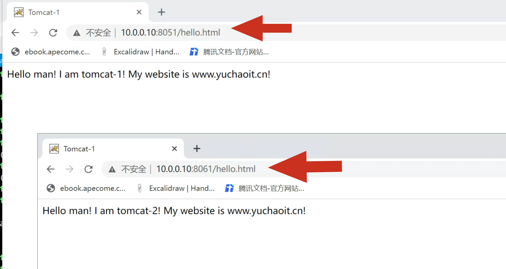
至此实现了tomcat的两个实例配置。
6.nginx+tomcat多实例负载均衡
这里你可以有2个玩法
1. 部署2台机器，实现独立的2个tomcat应用，如
10.0.0.10:8080
10.0.0.11:8080
实现两个后端节点，基于nginx实现java后端负载均衡。
2. 也可以直接基于多实例的玩法基础上，简易操作即可。
实战，基于nginx实现jpress博客项目的负载均衡访问。
1.主要要重新解压jpress.war到webapps，重启tomcat即可
tomcat-1 tomcat-2
[root@tomcat-10 /opt/tomcat-2/webapps]#ls
docs examples host-manager jpress jpress.war manager ROOT
2.nginx设置
cat > /etc/nginx/conf.d/tomcat.conf <<'EOF'
upstream tomcat_lb {
server 10.0.0.10:8051;
server 10.0.0.10:8061;
}
server {
listen 80;
server_name localhost;
location / {
proxy_pass http://tomcat_lb;
proxy_set_header Host $host;
proxy_set_header X-Real-IP $remote_addr;
}
}
EOF
3.访问hello.html测试
4.jpress负载均衡
抓日志即可
tail -f /opt/tomcat-2/logs/localhost_access_log.2022-07-17.txt
tail -f /var/log/nginx/access.log
7.zabbix监控tomcat
Java虚拟机(JVM)具有内置的插装，使您能够使用JMX监视和管理它。
您还可以使用JMX监视工具化的应用程序。
监控原理：
当Zabbix-Server需要知道java应用程序的某项性能的时候，会启动自身的一个Zabbix-JavaPollers进程去连接Zabbix-JavaGateway请求数据
而ZabbixJavagateway收到请求后使用"JMXmanagementAPI"去查询特定的应用程序，而前提是应用程序这端在开启时需要"-Dcom.sun.management.jmxremote"参数来开启JMX远程查询就行。
Java程序会启动自身的一个简单的小程序端口12345向Zabbix-JavaGateway提供请求数据。
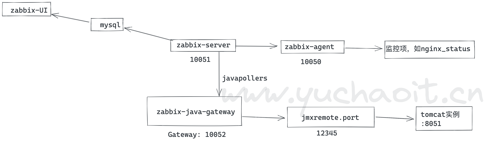
从上面的原理图中可以看出，配置Zabbix监控Java应用程序的关键点在于：
配置Zabbix-JavaGateway、让Zabbix-Server能够连接Zabbix-JavaGateway、Tomcat开启JVM远程监控功能等。
7.1 tomcat监控
1.使用jps命令，查看java相关的进程资源
[root@tomcat-10 ~]#jps -lvm
4292 org.apache.catalina.startup.Bootstrap start -Djava.util.logging.config.file=/opt/tomcat-1/conf/logging.properties -Djava.util.logging.manager=org.apache.juli.ClassLoaderLogManager -Djava.endorsed.dirs=/opt/tomcat8/endorsed -Dcatalina.base=/opt/tomcat-1 -Dcatalina.home=/opt/tomcat8 -Djava.io.tmpdir=/opt/tomcat-1/temp
3739 org.apache.catalina.startup.Bootstrap start -Djava.util.logging.config.file=/opt/tomcat-2/conf/logging.properties -Djava.util.logging.manager=org.apache.juli.ClassLoaderLogManager -Djava.endorsed.dirs=/opt/tomcat8/endorsed -Dcatalina.base=/opt/tomcat-2 -Dcatalina.home=/opt/tomcat8 -Djava.io.tmpdir=/opt/tomcat-2/temp
4716 sun.tools.jps.Jps -lvm -Denv.class.path=.:/opt/jdk8/lib:/opt/jdk8/jre/lib:/opt/jdk8/lib/tools.jar -Dapplication.home=/opt/jdk1.8.0_221 -Xms8m
2.修改tomcat配置文件，添加jmx监控参数
[root@tomcat-10 ~]#vim /opt/tomcat8/bin/catalina.sh
98 # OS specific support. $var _must_ be set to either true or false.
99
100 CATALINA_OPTS="$CATALINA_OPTS
101 -Dcom.sun.management.jmxremote
102 -Djava.rmi.server.hostname=10.0.0.10
103 -Dcom.sun.management.jmxremote.port=12345
104 -Dcom.sun.management.jmxremote.ssl=false
105 -Dcom.sun.management.jmxremote.authenticate=false"
指定主机名或IP，是否开启远程管理，是否启动ssl，是否启用认证。
3. 目前只能实现监控一个实例，目前基于tomcat8部署多实例，多实例jmx监控的文档更新了太多。监控tomcat-1即可
[root@tomcat-10 ~]#/opt/tomcat-shell/start_tomcat.sh /opt/tomcat-1/
/opt/tomcat-shell/start_tomcat.sh /opt/tomcat-1/ start succeed
7.2 zabbix-server设置
zabbix想要监控tomcat，需要借助于zabbix-java-gateway工具
[root@zabbix-server-71 ~]#yum install zabbix-java-gateway -y
修改配置文件
[root@zabbix-server-71 ~]#grep -E '^[a-Z]' /etc/zabbix/zabbix_java_gateway.conf
PID_FILE="/var/run/zabbix/zabbix_java.pid"
START_POLLERS=5
[root@zabbix-server-71 ~]#grep -E '^[a-Z]' /etc/zabbix/zabbix_server.conf
LogFile=/var/log/zabbix/zabbix_server.log
LogFileSize=0
PidFile=/var/run/zabbix/zabbix_server.pid
SocketDir=/var/run/zabbix
DBHost=localhost
DBName=zabbix
DBUser=zabbix
DBPassword=linux0224
SNMPTrapperFile=/var/log/snmptrap/snmptrap.log
Timeout=4
AlertScriptsPath=/usr/lib/zabbix/alertscripts
ExternalScripts=/usr/lib/zabbix/externalscripts
LogSlowQueries=3000
AlertScriptsPath=/usr/lib/zabbix/alertscripts
JavaGateway=127.0.0.1
JavaGatewayPort=10052
StartJavaPollers=5
重启，检查
[root@zabbix-server-71 ~]#systemctl start zabbix-java-gateway.service
[root@zabbix-server-71 ~]#systemctl restart zabbix-server.service
[root@zabbix-server-71 ~]#
[root@zabbix-server-71 ~]#ps -ef|grep java
zabbix 7259 1 3 22:29 ? 00:00:00 java -server -Dlogback.configurationFile=/etc/zabbix/zabbix_java_gateway_logback.xml -classpath lib:lib/android-json-4.3_r3.1.jar:lib/logback-classic-1.2.9.jar:lib/logback-core-1.2.9.jar:lib/slf4j-api-1.7.32.jar:bin/zabbix-java-gateway-4.0.42.jar -Dzabbix.pidFile=/var/run/zabbix/zabbix_java.pid -Dzabbix.startPollers=5 -Dsun.rmi.transport.tcp.responseTimeout=3000 com.zabbix.gateway.JavaGateway
zabbix 7329 7297 0 22:29 ? 00:00:00 /usr/sbin/zabbix_server: java poller #1 [got 0 values in 0.000102 sec, idle 5 sec]
zabbix 7331 7297 0 22:29 ? 00:00:00 /usr/sbin/zabbix_server: java poller #2 [got 0 values in 0.000051 sec, idle 5 sec]
zabbix 7332 7297 0 22:29 ? 00:00:00 /usr/sbin/zabbix_server: java poller #3 [got 0 values in 0.000065 sec, idle 5 sec]
zabbix 7333 7297 0 22:29 ? 00:00:00 /usr/sbin/zabbix_server: java poller #4 [got 0 values in 0.000045 sec, idle 5 sec]
zabbix 7334 7297 0 22:29 ? 00:00:00 /usr/sbin/zabbix_server: java poller #5 [got 0 values in 0.000050 sec, idle 5 sec]
端口
[root@zabbix-server-71 ~]#netstat -tunlp|grep java
tcp6 0 0 :::10052 :::* LISTEN 7259/java
7.3 页面添加监控
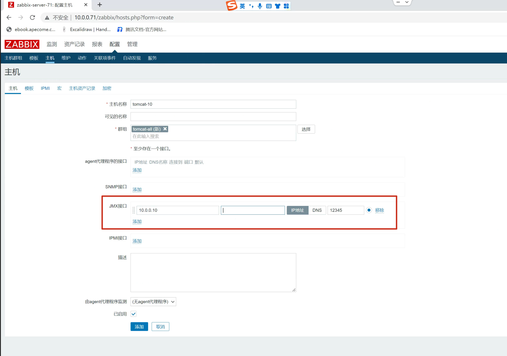
关联tomcat模板
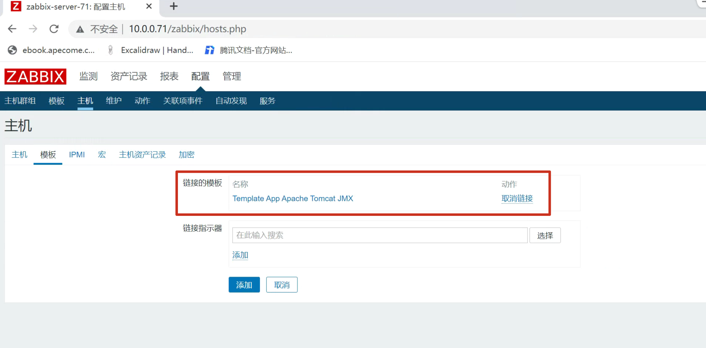
正监控jmx了
Java 管理扩展( JMX ) 是一种Java技术，它提供用于管理和监视应用程序、系统对象、设备（例如打印机）和面向服务的网络的工具。
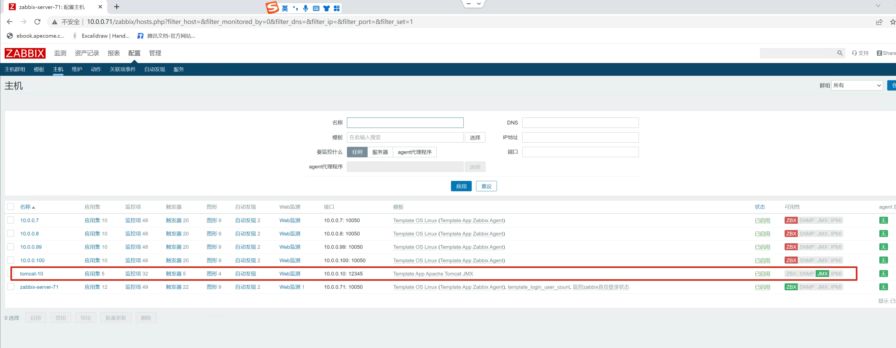
7.4 手动采集tomcat实例运行数据
1. tomcat环境
[root@tomcat-10 ~]#/opt/tomcat8/bin/version.sh
Using CATALINA_BASE: /opt/tomcat8
Using CATALINA_HOME: /opt/tomcat8
Using CATALINA_TMPDIR: /opt/tomcat8/temp
Using JRE_HOME: /opt/jdk8
Using CLASSPATH: /opt/tomcat8/bin/bootstrap.jar:/opt/tomcat8/bin/tomcat-juli.jar
Server version: Apache Tomcat/8.0.27
Server built: Sep 28 2015 08:17:25 UTC
Server number: 8.0.27.0
OS Name: Linux
OS Version: 3.10.0-862.el7.x86_64
Architecture: amd64
JVM Version: 1.8.0_221-b11
JVM Vendor: Oracle Corporation
2. 下载jmx远程监控jar包
[root@tomcat-10 ~]#ls /opt/tomcat8/lib/
wget -O /opt/tomcat8/lib/catalina-jmx-remote.jar http://archive.apache.org/dist/tomcat/tomcat-8/v8.0.23/bin/extras/catalina-jmx-remote.jar
3.抓取tomcat数据测试
（1）下载cmdline-jmxclient-0.10.3.jar文件，下载地址
wget http://crawler.archive.org/cmdline-jmxclient/cmdline-jmxclient-0.10.3.jar
（2）本地执行如下命令查看tomcat的堆内存信息
[root@tomcat-10 /opt]#java -jar cmdline-jmxclient-0.10.3.jar - 127.0.0.1:12345 java.lang:type=Memory HeapMemoryUsage
07/17/2022 22:54:05 +0800 org.archive.jmx.Client HeapMemoryUsage:
committed: 394264576
init: 62914560
max: 880279552
used: 172865216
java -jar cmdline-jmxclient-0.10.3.jar controlRole:tomcat 127.0.0.1:12345 java.lang:type=Threading TotalStartedThreadCount
[root@tomcat-10 /opt]#java -jar cmdline-jmxclient-0.10.3.jar controlRole:tomcat 127.0.0.1:12345 Catalina:type=Server serverInfo
07/17/2022 23:13:17 +0800 org.archive.jmx.Client serverInfo: Apache Tomcat/8.0.27
7.5 确认调通了
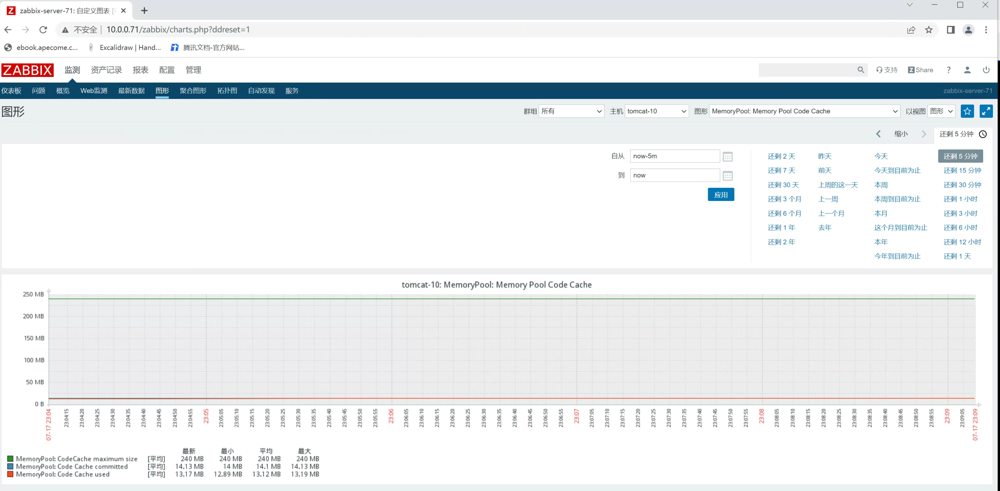